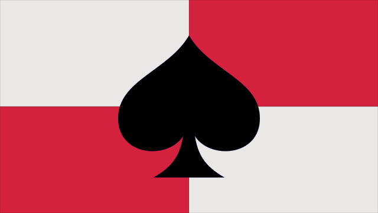

LOK PiK Wrocław
Stowarzyszenie kolekcjonersko-strzeleckie
Podstawowe informacje
LOK PiK to kameralne stowarzyszenie miłośników broni palnej oraz szeroko rozumianego strzelectwa. Zrzeszamy kolekcjonerów broni i strzelców z całej Polski. Regularnie organizujemy treningi strzeleckie we Wrocławiu.
- Zaświadczenie dla WPA: tak
- Treningi na strzelnicy z własną bronią: tak
- Strzelanie z broni czarnoprochowej: tak
- Strzelanie z wiatrówek: tak
- Składka 60 zł na kwartał, jeśli chcesz strzelać
- Składka 1 zł na rok, jeśli chcesz tylko należeć
- Numer konta: 50 1050 1575 1000 0091 1342 6168
- e-mail: klub@lokpik.org
Tyle tytułem wstępu w telegraficznym skrócie. Szczegółowe rozwinięcie powyższych informacji znajdziesz poniżej.